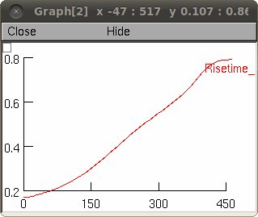

This is the readme for the model associated with the paper Casale AE, McCormick DA (2011) Active action potential propagation but not initiation in thalamic interneuron dendrites. J Neurosci 31:18289-302 These files were contributed by Amanda Casale. General description of the model: This model explores conductance distributions in dendrites for comparison to voltage-sensitive dye optical recordings from thalamic interneuron dendrites in the dorsal lateral geniculate nucleus. The purpose is to assess action potential kinetics and amplitude in thalamic interneuron dendrite models under different dendritic conductance distributions. Example Use: The auto-launch (mosinit.hoc) will start the simulation with the configuration that most closely matched experiment. Compile the mod files first with mknrndll (MAC and mswin) or nrnivmodl (linux/unix) if starting manually. Click the measure button to run the simulation and generate graphs of kinetics. A graph similar to that in Figure 10E's 50-25% red line is among those displayed:  Description of key files: cell_setup5_'' These files will define each cell conductance distribution for comparison against the real cell. Active Axon = 50 to 25% condition Full Grad = 100 to 0% condition No Na Dend = 0% sodium condition (our passive condition) mosinit_setup5_'' These files will run the individual conditions. In Windows Explorer double click a mosinit_setup5_'' to run simulation. Click the "measure" button to generate graphs of kinetics. mhw.mod Measures peak depol and calculates spike half width, 10-90% rise time, and 90-10% fall time. Threshold may be specified by the user, or determined in the previous run.